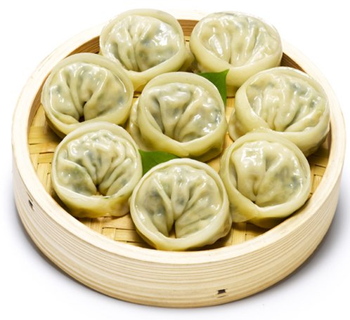

야식
-
햄버거
늦은 밤 음식을 해 먹기 귀찮을 때!
새벽까지 문 열고 있는 햄버거가 최고죠~~ -

비빔밥
집에 있는 반찬을 이용해 고추장 넣고
참기름 한 방울!!
정말 맛있죠~~ -

떡볶이
집에 간단한 재료만 있다면
빨리 해 먹을 수 있는 간식!
쫄깃쫄깃 매콤한 떡볶이~~ -

만두
만두는 언제 먹어도 정말 맛있죠 ㅎㅎ
냉동만두는 전자레인지에 돌려주기만 하면 돼요~ 물만두, 찐만두, 튀김만두, 군만두 등 종류도 엄청 많아요 -

보쌈
배추에 김치, 굴, 무김치를 올려 싸먹으면 정말 야식으로 최고죠!
-
피자
높은 칼로리 때문에 고민할 수 있지만!
쭉쭉 늘어나는 치즈와 토핑이 가득한 도우
혼자보단 여러 명이 있을 때 더 많이 찾게 되는 야식이죠 ㅎㅎ